一、索引什么是索引？索引的底层数据结构索引的优缺点索引分类1. 数据结构角度2. 物理存储角度非聚簇索引一定回表查询吗？索引覆盖3. 逻辑角度4. 按照字段个数为表添加索引索引下推索引区分度索引失效的情况索引优化索引的适用条件B+树索引与其他索引的比较既然减少树的高度可以减少I/O操作，为什么不能将树高转为1层？二、查询优化开启慢查询日志，获取查询时间比较长的SQL语句使用Explain进行分析优化数据访问重构查询方法三、事务事务有哪些特性？并行事务会引发什么问题？事务的隔离级别有哪些？Read View 在 MVCC 里如何工作的？可重复读是如何工作的？读提交是如何工作的？四、锁全局锁表级锁行锁update 没加索引会锁全表？死锁五、日志为什么需要 undo log？为什么需要 Buffer Pool？Buffer Pool 有多大？Buffer Pool 缓存什么？如何管理 Buffer Pool？如何管理空闲页？如何管理脏页？如何提高缓存命中率？脏页什么时候会被刷入磁盘？为什么需要 redo log ？为什么需要 binlog ？主从复制是怎么实现？binlog 什么时候刷盘？为什么需要两阶段提交？五、存储引擎InnoDBInnoDB 是如何存储数据的？MyISAM比较七、数据类型整型浮点数字符串时间和日期八、切分水平切分(sharding)垂直切分Sharding 策略Sharding 存在的问题九、复制主从复制主从复制延迟产生的原因是什么？如何解决延迟问题？多线程slave（MTS）问题读写分离十、其他问题如何设计一个mysql表一条SQL语句执行的过程MySql基本架构Mysql一行是怎么存储的mysql怎么存储数据的？每一行都有哪些信息？行溢出后，MySQL 是怎么处理的？参考资料
一、索引
什么是索引？
索引是一种用于快速查找和检索数据的数据结构。常见的索引结构有:B树，B+树和Hash。
索引的作用就相当于目录的作用。打个比方，我们在查字典的时候，如果没有目录，那么我们只能一页一页的去找我们需要查的那个字，速度很慢。如果有目录了，我们只需要先去目录中查找字的位置，然后直接翻到那一页就行了。
索引的底层数据结构
数据结构
B tree指的是Balance Tree，也就是平衡。平衡树是一棵查找树，并且所有叶子节点位于同一层。
每个节点最多有m个子节点。
每个非叶子节点(除了根)具有至少m/2(向上取整)子节点。
如果根不是叶子节点，则根至少有两个子节点。
具有k个子节点的非叶节点包含k-1个键。
所有叶子都位于同一层，没有任何信息。
B+树
指针：B+ Tree是基于B Tree和叶子节点顺序访问指针进行实现，它具有B tree的平衡性，并且通过顺序访问指针来提高区间查询的性能。
存储：非叶子节点不存储data，只存储索引，这样在同样的空间下存储更多的索引，可以减少树高。
在B+树中，一个节点中的key从左到右非递减排列，如果某个指针的左右相邻key分别是keyi和keyi+1,且不为null,则该指针指向节点的所有key大于等于keyi且小于等于keyi+1;
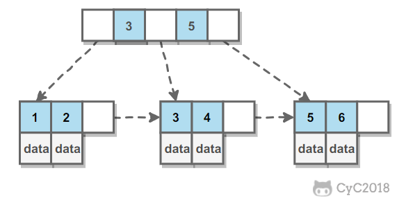
操作
进行查找操作时，首先在根节点进行二分查找，找到一个key所在的指针，然后递归的在指针所指向的节点进行查找，直到查找到叶子节点，然后在叶子节点上进行二分查找，找到key所对应的data.
插入删除操作会破坏平衡树的平衡性，因此在进行插入删除操作之后，需要对树进行分裂，合并，旋转等操作来维持平衡性。
与红黑树比较 红黑树等平衡树也可以实现索引，但是文件系统及数据库普遍采用B+tree作为索引结构，这是因为使用B+树访问磁盘数据具有更高的性能。
B+树有更低的树高 平衡树的树高O(h)=O(logdN)，其中d为每个节点的出度，红黑树的出度时2，而B+树的出度一般非常大，所以红黑树的树高明显比B+树大的多。
磁盘访问原理
操作系统一般将内存和磁盘分割成固定大小的块，每一块称为一页，内存与磁盘以页为单位交换数据。数据库系统将索引的一个节点的大小设置为页的大小，使得一次I/O就能完全载入一个节点。 如果数据不在同一个磁盘块上，那么通常需要移动制动手臂进行寻道，而制动手臂因为其物理机构导致了移动效率低下，从而增加磁盘数据读取时间。B+树相对于红黑树有更低的树高，进行寻道次数与树高成正比，在同一个磁盘块上进行访问只需要很短的磁盘旋转时间，所以B+树更适合磁盘数据的读取。
磁盘预读特性 为了减少磁盘I/O操作，磁盘往往不是严格按需读取，而且每次都会预读。预读过程中，磁盘进行顺序读取，顺序读取不需要进行磁盘寻道，并且只需要很短的磁盘旋转时间，速度会非常快。并且可以利用预读特性，相邻的节点也能够被预先载入。
索引的优缺点
优点
可以大大加快数据的检索速度(大大减少检索的数据量)。 这也是创建索引的最主要的原因。
帮助服务器避免进行排序和分组，以及避免创建临时表。(B+Tree 索引是有序的，可以用于 ORDER BY 和 GROUP BY 操作。临时表主要是在排序和分组过程中创建，不需要排序和分组，也就不需要创建临时表）。
将随机 I/O 变为顺序 I/O.（B+Tree 索引是有序的，会将相邻的数据都存储在一起）。
缺点
创建索引和维护索引需要耗费许多时间。当对表中的数据进行增删改的时候，如果数据有索引，那么索引也需要动态的修改，会降低SQL的效率。
占用物理存储空间：索引需要使用物理文件存储，也会耗费一定空间.
索引分类
索引是在存储引擎层实现的，而不是在服务器层实现的，所以不同存储引擎具有不同的索引类型和实现。
在创建表时，InnoDB 存储引擎会根据不同的场景选择不同的列作为索引：
如果有主键，默认会使用主键作为聚簇索引的索引键（key）；
如果没有主键，就选择第一个不包含 NULL 值的唯一列作为聚簇索引的索引键（key）；
在上面两个都没有的情况下，InnoDB 将自动生成一个隐式自增 id 列作为聚簇索引的索引键（key）；
1. 数据结构角度
B+Tree索引
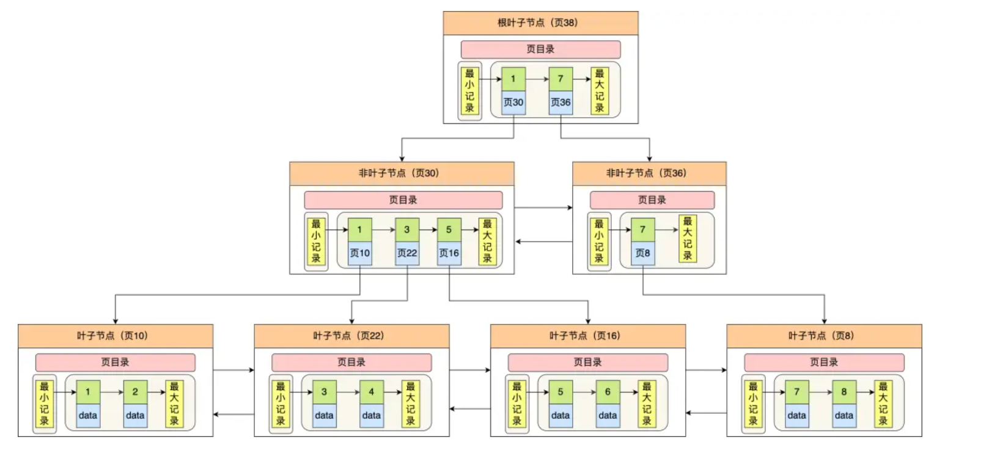
是大多数Mysql存储引擎的默认索引类型。
因为不需要进行全表扫描，只需要对树进行搜索即可，所以查找速度快很多。
因为B+树的有序性，所以除了用于查找，还可以用于排序和分组。
可以指定多个列作为索引另外，多个索引列共同组成键。
适用于全键值，键值范围和键前缀查找，其中键前缀查找只适合于最左前缀查找。如果不是按照索引列的顺序进行查找，则无法使用索引。
InnoDB的B+索引分为主索引和辅助索引
主索引的叶子节点data域记录着完整的数据记录，这种索引方式被称为聚簇索引。因为无法把数据行存放在两个不同的地方，所以一个表只能有一个聚簇索引。
辅助索引的叶子节点的data域记录着主键的值，因此在使用辅助索引进行查找是，需要先找到主键值，然后再到主索引中进行查找。
哈希索引
哈希索引能以O(1)时间进行查找，但是失去了有序性。
无法用于排序和分组；
只支持精确查找，无法用于部分查找和范围查找。
InnoDB存储引擎有一个特殊的功能叫‘自适应哈希索引’，当某个索引值被使用的非常频繁时，会再B+tree索引之上再创建一个哈希索引，这样就会让B+索引具有哈希索引的一些优点，比如快速的哈希查找。
2. 物理存储角度
可分为聚簇索引和二级索引。
聚簇索引
聚簇索引即索引结构和数据一起存放的索引。主键索引属于聚集索引。在Mysql中，InnoDB引擎表中的
.ibd文件就包含了该表的索引和数据，对于InnoDB引擎表来说，该表的索引(B+)树的每个非叶子节点存储索引，叶子节点存储索引和索引对应的数据。优点：聚簇索引的查询速度非常的快，因为整个B+树本身就是一颗多叉平衡树，叶子节点也都是有序的。定位到索引的节点，就相当于定位到了数据。
缺点
依赖于有序的数据：因为B+树是多路平衡树，如果索引的数据不是有序的，那么就需要在插入时排序，如果数据时整形的还好，否则类似于字符串这种数据，插入或者查找的速度肯定比较慢。
更新代价大：如果索引列的数据被修改时，那么对应的索引也将被修改，而且聚簇索引的叶子节点还存放着着数据，修改的代价肯定较大的。所以对于主键索引来说，主键一般都是不可被修改的。
二级索引
非聚簇索引即索引结构和数据分开存放的索引。二级索引属于非聚簇索引。
二级索引的 B+Tree 的叶子节点存放的是主键值，而不是实际数据。
MYISAM引擎表的.MYI文件包含了表的索引，该表的索引（B+树）的每个叶子非叶子节点存储索引，叶子节点村塾索引和索引对应数据的指针，指向.MYD文件的数据。
非聚簇索引的叶子节点并不一定存放数据的指针，因为二级索引的叶子节点存放的就是主键，根据主键再回表查数据。
优点：更新代价比聚簇索引要小。 非聚簇索引的叶子节点是不存放数据的。
缺点
和聚簇索引一样，非聚簇索引也依赖于有序的数据。
可能会二次查询（回表）：是非聚簇索引最大的缺点。当查到索引对应的指针或者主键后，可能还需要根据指针或者主键再到数据文件或者表中查询。
非聚簇索引一定回表查询吗？
非聚簇索引不一定回表查询，当索引的key本身就是要查询的字段时，查到之后直接返回就行，无需回表查询。
试想一种情况，用户准备使用SQL查询用户名，而用户名字段正好建立了索引。
SELECT name FROM table WHERE name='guang19';
那么这个索引的 key 本身就是 name，查到对应的 name 直接返回就行了，无需回表查询。
即使是MYISAM也是这样，虽然MYISAM的主键索引确实需要回表，因为他的主键索引的叶子节点存放的是指针，但如果SQL查询的是主键，主键本身的key就是主键，查到之后返回就行。这种情况称为覆盖索引。
索引覆盖
如果一个索引包含(或者覆盖)所有要查询的字段的值，称为覆盖索引。
在Innode存储引擎中，如果不是主键索引，叶子节点存储的是主键+列值。最终还是要回表。也就是要通过主键再查找一次。这样就会比较慢。覆盖索引就是把要查询的列和索引是对应的，不做回表操作。
覆盖索引即需要查询的字段正好是索引的字段，那么直接根据该索引，就可以查到数据了。而无需回表查询。
如主键索引：如果一条SQL需要查询主键，那么正好根据主键索引就可以查到主键。
再如普通索引：如果一条SQL需要查询name，name字段正好有索引，那么直接根据这个索引就可以查到数据，也无需回表。
3. 逻辑角度
主键索引
数据表中的主键列使用的就是主键索引。
一张数据表只能有一个主键，并且主键不能为null,不能重复。
在mysql的InnoDB的表中，当没有显示的指定表的主键时，InnoDB会自动先检查表中是否有唯一索引的字段，如果有，则选择该字段为默认的主键，否则InnoDB会自动创建一个6byte的自增主键。
为什么建议InnoDB表必须建主键，并且推荐使用整形的自增主键？
因为主键自带索引，如果不建索引，数据库就自己建索引。
因为在查找过程中涉及到比较大小，整型作为索引，容易直接判断大小而保持有序。
自增： 因为叶子节点的索引元素都是递增的，从左到右排好序的，可以直接在原来链表的后面插元素。效率较高。
唯一索引(Unique Key): 唯一索引也是一种约束，唯一索引的属性列不能出现重复的数据，但是允许数据为NULL，一张表允许创建多个唯一索引。建立唯一索引的目的大部分时候都是为了该属性列的数据的唯一性，而不是查询效率。
普通索引(Index) : 普通索引的唯一作用就是为了快速查询数据，一张表允许创建多个普通索引，并允许数据重复和NULL.
前缀索引(Prefix): 前缀索引只适用于字符串类型的数据。前缀索引是对文本的前几个字符创建索引，相对于普通索引建立的数据更小，因为只取前几个字符。
全文索引(Full Text) : 全文索引主要是为了检索大文本数据中的关键字的信息，是目前搜索引擎数据库使用的一种技术。Mysql5.6 之前只有 MYISAM 引擎支持全文索引，5.6 之后 InnoDB 也支持了全文索引。
Myisam存储索引支持全文索引，用于查找文本中的关键词，而不是直接比较是否相等。
查找条件使用MATCH AGAINST，而不是普通的WHERE。
全文索引使用倒排索引实现，它记录着关键词到其所在文档的映射。
InnoDB 存储引擎在 MySQL 5.6.4 版本中也开始支持全文索引。
4. 按照字段个数
从字段个数的角度来看，索引分为单列索引、联合索引（复合索引）。
建立在单列上的索引称为单列索引，比如主键索引；
建立在多列上的索引称为联合索引；
使用联合索引时，存在最左匹配原则，也就是按照最左优先的方式进行索引的匹配。在使用联合索引进行查询的时候，如果不遵循「最左匹配原则」，联合索引会失效，这样就无法利用到索引快速查询的特性了。
比如，如果创建了一个 (a, b, c) 联合索引，如果查询条件是以下这几种，就可以匹配上联合索引：
where a=1；
where a=1 and b=2 and c=3；
where a=1 and b=2；
但是，如果查询条件是以下这几种，因为不符合最左匹配原则，所以就无法匹配上联合索引，联合索引就会失效:
where b=2；
where c=3；
where b=2 and c=3；
上面这些查询条件之所以会失效，是因为(a, b, c) 联合索引，是先按 a 排序，在 a 相同的情况再按 b 排序，在 b 相同的情况再按 c 排序。所以，b 和 c 是全局无序，局部相对有序的，这样在没有遵循最左匹配原则的情况下，是无法利用到索引的。
联合索引的最左匹配原则，在遇到范围查询（如 >、<）的时候，就会停止匹配，也就是范围查询的字段可以用到联合索引，但是在范围查询字段的后面的字段无法用到联合索引。注意，对于 >=、<=、BETWEEN、like 前缀匹配的范围查询，并不会停止匹配，
为表添加索引
x1.添加主键索引ALTER TABLE `table_name` ADD PRIMARY KEY ( `column` ) **CREATE TABLE table_name ( .... PRIMARY KEY (index_column_1) USING BTREE);2.添加唯一索引ALTER TABLE `table_name` ADD UNIQUE ( `column` ) CREATE TABLE table_name ( .... UNIQUE KEY(index_column_1,index_column_2,...) );3.添加普通索引ALTER TABLE `table_name` ADD INDEX index_name ( `column` )CREATE TABLE table_name ( .... INDEX(index_column_1,index_column_2,...) );4.添加全文索引ALTER TABLE `table_name` ADD FULLTEXT ( `column`) 5. 添加多列索引ALTER TABLE `table_name` ADD INDEX index_name ( `column1`, `column2`, `column3` )6. 添加前缀索引CREATE TABLE table_name( column_list, INDEX(column_name(length)));
索引下推
对于联合索引（a, b），在执行 select * from table where a > 1 and b = 2 语句的时候，只有 a 字段能用到索引，那在联合索引的 B+Tree 找到第一个满足条件的主键值（ID 为 2）后，还需要判断其他条件是否满足（看 b 是否等于 2），那是在联合索引里判断？还是回主键索引去判断呢？
在 MySQL 5.6 之前，只能从 ID2 （主键值）开始一个个回表，到「主键索引」上找出数据行，再对比 b 字段值。
而 MySQL 5.6 引入的索引下推优化（index condition pushdown)， 可以在联合索引遍历过程中，对联合索引中包含的字段先做判断，直接过滤掉不满足条件的记录，减少回表次数。
当你的查询语句的执行计划里，出现了 Extra 为 Using index condition，那么说明使用了索引下推的优化。
索引区分度
实际开发工作中建立联合索引时，要把区分度大的字段排在前面，这样区分度大的字段越有可能被更多的 SQL 使用到。
索引失效的情况
查询条件包括or，可能导致索引失效。如or前的条件的列中有索引，而后面的列没有索引，那么设计的索引都不会用到。因为 OR 的含义就是两个只要满足一个即可，因此只有一个条件列是索引列是没有意义的，只要有条件列不是索引列，就会进行全表扫描。
如果字段类型是字符串，where时一定要加单引号括起来，否则索引会失效。MySQL 在遇到字符串和数字比较的时候，会自动把字符串转为数字，然后再进行比较。如果字符串是索引列，而条件语句中的输入参数是数字的话，那么索引列会发生隐式类型转换，由于隐式类型转换是通过 CAST 函数实现的，等同于对索引列使用了函数，所以就会导致索引失效。
like通配符可能导致索引失效：like查询是以%开头，会导致索引失效。
联合索引，查询时条件列不是联合索引中的第一列，索引失效。
在索引列上使用mysql的内置函数，索引失效。因为索引保存的是索引字段的原始值，而不是经过函数计算后的值，自然就没办法走索引了。
对索引列运算（如加减乘除）索引失效。
in走索引，索引字段上使用（！= 或者 < >，not in）时，可能会导致索引失效。
索引字段上使用is null，is not null，可能会导致索引失效。如null的数据非常多，这时查询null，就有可能全表扫描，索引失效。
左连接查询或者右连接查询查询关联的字段编码格式不一样，可能会导致索引失效。
mysql估计使用全表扫描要比使用索引快,则不使用索引。
索引优化
防止索引失效
组合索引 在需要使用多个列作为条件进行查询时，使用组合索引比使用多个单列索引性能更好。 例如下面的语句中，最好把 actor_id 和 film_id 设置为多列索引。
xxxxxxxxxxSELECT film_id, actor_ id FROM sakila.film_actorWHERE actor_id = 1 AND film_id = 1;选择合适的索引列顺序 让选择性最强的索引放在前面。索引的选择性是指：不重复的索引值和记录总数的比值。最大为1。此时每个记录都有唯一的索引与其对应，选择性越高，每个记录的区分度越高，查询效率也就越高。
前缀索引
有时候需要索引很长的字符列，这样会造成索引变得非常大，这时候可以索引开始的部分字符，这样可以大大节约索引空间，从而提高索引效率，但是这样会降低索引的选择性，一般情况下某个列前缀的选择性也是足够高的，足以满足查询性能。
对于BLOB，TEXT和VARCHAR类型的列，必须使用前缀索引，只索引开始的部分字符。
不过，前缀索引有一定的局限性，例如：
order by 就无法使用前缀索引；
无法把前缀索引用作覆盖索引；
覆盖索引
覆盖索引是指 SQL 中 query 的所有字段，在索引 B+Tree 的叶子节点上都能找得到的那些索引，从二级索引中查询得到记录，而不需要通过聚簇索引查询获得，可以避免回表的操作。 比如可以建立联合索引。使用覆盖索引的好处就是，不需要查询出包含整行记录的所有信息，也就减少了大量的 I/O 操作。
主键索引最好是自增的
如果我们使用自增主键，那么每次插入的新数据就会按顺序添加到当前索引节点的位置，不需要移动已有的数据，当页面写满，就会自动开辟一个新页面。因为每次插入一条新记录，都是追加操作，不需要重新移动数据，因此这种插入数据的方法效率非常高。
如果我们使用非自增主键，由于每次插入主键的索引值都是随机的，因此每次插入新的数据时，就可能会插入到现有数据页中间的某个位置，这将不得不移动其它数据来满足新数据的插入，甚至需要从一个页面复制数据到另外一个页面，我们通常将这种情况称为页分裂。页分裂还有可能会造成大量的内存碎片，导致索引结构不紧凑，从而影响查询效率。
索引列要设置为 NOT NULL
第一原因：索引列存在 NULL 就会导致优化器在做索引选择的时候更加复杂，更加难以优化，因为可为 NULL 的列会使索引、索引统计和值比较都更复杂，比如进行索引统计时，count 会省略值为NULL 的行。
第二个原因：NULL 值是一个没意义的值，但是它会占用物理空间，所以会带来的存储空间的问题，因为 InnoDB 存储记录的时候，如果表中存在允许为 NULL 的字段，那么行格式 (opens new window)中至少会用 1 字节空间存储 NULL 值列表
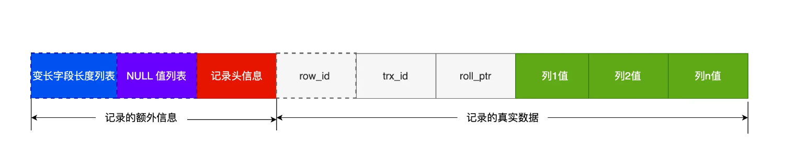
索引的适用条件
什么时候适用索引？
字段有唯一性限制的，比如商品编码；
经常用于
WHERE查询条件的字段，这样能够提高整个表的查询速度，如果查询条件不是一个字段，可以建立联合索引。经常用于
GROUP BY和ORDER BY的字段，这样在查询的时候就不需要再去做一次排序了，因为我们都已经知道了建立索引之后在 B+Tree 中的记录都是排序好的。
什么时候不需要创建索引？
WHERE条件，GROUP BY，ORDER BY里用不到的字段，索引的价值是快速定位，如果起不到定位的字段通常是不需要创建索引的，因为索引是会占用物理空间的。字段中存在大量重复数据，不需要创建索引，比如性别字段，只有男女，如果数据库表中，男女的记录分布均匀，那么无论搜索哪个值都可能得到一半的数据。在这些情况下，还不如不要索引，因为 MySQL 还有一个查询优化器，查询优化器发现某个值出现在表的数据行中的百分比很高的时候，它一般会忽略索引，进行全表扫描。
表数据太少的时候，不需要创建索引；
经常更新的字段不用创建索引，比如不要对电商项目的用户余额建立索引，因为索引字段频繁修改，由于要维护 B+Tree的有序性，那么就需要频繁的重建索引，这个过程是会影响数据库性能的。
B+树索引与其他索引的比较
B-tree：因为B树不管叶子节点还是非叶子节点，都会保存数据，这样导致在非叶子节点中能保存的指针数量变少（有些资料也称为扇出），指针少的情况下要保存大量数据，只能增加树的高度，导致IO操作变多，查询性能变低.
Hash：虽然可以快速定位，但是没有顺序，不支持范围查找，IO复杂度高。
二叉树：树的高度不均匀，不能自平衡，查找效率跟数据有关（树的高度），并且IO代价高。
红黑树：树的高度随着数据量增加而增加，IO代价高。
不使用平衡二叉树的原因如下：
最大原因：深度太大(因为一个节点最多只有2个子节点)，一次查询需要的I/O复杂度为O(lgN),而b+tree只需要O(log_mN),而其出度m非常大，其深度一般不会超过4 平衡二叉树逻辑上很近的父子节点，物理上可能很远，无法充分发挥磁盘顺序读和预读的高效特性。
HashMap为什么不用B+树？而用红黑树？
B+树在数据库中被应用的原因就是B+树比B树更加“矮胖”，B+树的非叶子结点不存储数据，所以每个结点能存储的关键字更多。所以B+树更能应对大量数据的情况。 jdk1.7中的HashMap本来是数组+链表的形式，链表由于其查找慢的特点，所以需要被查找效率更高的树结构来替换。 如果用B+树的话，在数据量不是很多的情况下，数据都会“挤在”一个结点里面。这个时候遍历效率就退化成了链表。
B+Tree vs B Tree：B+Tree 只在叶子节点存储数据，而 B 树 的非叶子节点也要存储数据，所以 B+Tree 的单个节点的数据量更小，在相同的磁盘 I/O 次数下，就能查询更多的节点。另外，B+Tree 叶子节点采用的是双链表连接，适合 MySQL 中常见的基于范围的顺序查找，而 B 树无法做到这一点。
B+Tree vs 二叉树：对于有 N 个叶子节点的 B+Tree，其搜索复杂度为
O(logdN)，其中 d 表示节点允许的最大子节点个数为 d 个。在实际的应用当中， d 值是大于100的，这样就保证了，即使数据达到千万级别时，B+Tree 的高度依然维持在 3~4 层左右，也就是说一次数据查询操作只需要做 3~4 次的磁盘 I/O 操作就能查询到目标数据。而二叉树的每个父节点的儿子节点个数只能是 2 个，意味着其搜索复杂度为O(logN)，这已经比 B+Tree 高出不少，因此二叉树检索到目标数据所经历的磁盘 I/O 次数要更多。B+Tree vs Hash：Hash 在做等值查询的时候效率贼快，搜索复杂度为 O(1)。但是 Hash 表不适合做范围查询，它更适合做等值的查询，这也是 B+Tree 索引要比 Hash 表索引有着更广泛的适用场景的原因。
既然减少树的高度可以减少I/O操作，为什么不能将树高转为1层？
这样需要一次性把所有的数据加载到RAM中进行查询，浪费了内存空间。
二、查询优化
开启慢查询日志，获取查询时间比较长的SQL语句
开启慢查询日志
xxxxxxxxxxslow_query_log=ON -- 开启long_query_time=3 -- 时间slow_query_log_file=/var/lib/myql/slow-log.log -- 存放位置
使用Explain进行分析
Explain用来分析SELECT查询语句，开发人员可以通过分析Explain结果来优化查询语句。
xxxxxxxxxxexplain select ....如 EXPLAIN SELECT * FROM user WHERE id>3比较重要的字段
id: id字段时select查询的序列号，是一组数据，表示的是查询中执行select子句或者是操作表的顺序，id有三种情况
相同时表示加载表的顺序是从上到下的。
id不同id值越大，优先级越高，越先被执行。
id有相同也有不同。id相同的为一组，顺序从上到下执行，再所有组中，id值越大，越先被执行。
select_type: 查询的类型，从上往下效率越来越低
simple：简单的select查询，查询中不包含子查询或者union;
primary：查询中若包含任何复杂的子查询，最外层查询标记为该标识。
subquery：在select或where列表中包含了子查询。
derived：在from 列表中包含的子查询会被标记为derived(衍生)，mysql会递归执行这些子查询，把结果放入临时表中
union：若第二个select出现在union之后，则标记为union,若union包含在from子句的子查询，外层select将标记为derived.
union result：从联合在一起的union表中获取结果的select.
type: 提供了判断查询是否高效的重要依据。通过type字段，可以判断此次查询是全表扫描还是索引扫描。
null: mysql不访问任何表，索引，直接返回结果。
system：表示只有一行记录，这是const类型的特例，一般不会出现。
const ：根据主键或者唯一索引查询，表示通过索引一次就找到了，只查询一行语句。
eq_ref: 类似ref，区别在于使用的是唯一索引，使用主键的多表关联查询，关联查询出的记录只有一条，常见于主键或者唯一索引扫描。
ref: 使用非唯一性索引扫描，返回匹配某个单独值得所有行。
range: 只检索给定返回的行，使用一个索引来选择行，where之后出现between,<,>,in等操作。
index: 遍历索引树。
all：全表扫描。
key: 索引
possible_keys：显示可能应用在这个表的索引，一个或者多个
key:实际使用的索引，如果为null,则没有使用索引。
key_len :标识索引中使用的字节数，该值为索引字段最大可能长度，并非实际使用长度，在不损失精确度的前提下，长度越短越好。
rows：扫描的行数
extra：额外的信息，通常包括：Using index,Using where,Using index condition
using filesort：说明mysql会对数据使用一个外部的索引排序，而不是按照表内的索引顺序进行读取，称为文件排序。需要进行优化。
using temporary：说明使用了临时保存中间结果.需要进行优化。
Using index：表示相应的select操作使用了覆盖索引，效率不错。
优化数据访问
减少请求的数据量
只返回必要的列：最好不要使用select *语句。
只返回必要的行：使用LIMIT语句来限制返回的数据。
缓存重复查询的数据：使用缓存可以避免在数据库中进行查询，特别是在要查询的数据经常被重复查询时，缓存带来的查询性能提升将会是非常明显的。
减少服务器端扫描的行数 最有效的方式是使用索引来覆盖查询。
重构查询方法
切分大查询 一个大查询如果一次性执行的话，可能一次锁住很多数据，占满整个事务日志，耗尽系统资源，阻塞很多小但是重要的查询。
分解大连接查询 将一个大连接查询分解成对每一个表进行一次单表查询，然后在应用程序中进行关联。这样做的好处是:
让缓存更高效。 对于连接查询，如果其中一个表发生变化，那么整个查询缓存就无法使用。二分解后的多个查询，即使其中一个表发生变化，对其他表的查询缓存依然可以使用。
分解成多个单表查询，这些单表查询的缓存结果更可能被其他查询使用到，从而减少冗余记录的查询。
减少锁竞争；
在应用层进行连接，可以更容易对数据库进行拆分，从而更容易做到高性能和可伸缩。
查询本身效率也有可能会有所提升。
三、事务
事务有哪些特性？
原子性（Atomicity）：一个事务中的所有操作，要么全部完成，要么全部不完成，不会结束在中间某个环节，而且事务在执行过程中发生错误，会被回滚到事务开始前的状态，就像这个事务从来没有执行过一样，就好比买一件商品，购买成功时，则给商家付了钱，商品到手；购买失败时，则商品在商家手中，消费者的钱也没花出去。
一致性（Consistency）：是指事务操作前和操作后，数据满足完整性约束，数据库保持一致性状态。比如，用户 A 和用户 B 在银行分别有 800 元和 600 元，总共 1400 元，用户 A 给用户 B 转账 200 元，分为两个步骤，从 A 的账户扣除 200 元和对 B 的账户增加 200 元。一致性就是要求上述步骤操作后，最后的结果是用户 A 还有 600 元，用户 B 有 800 元，总共 1400 元，而不会出现用户 A 扣除了 200 元，但用户 B 未增加的情况（该情况，用户 A 和 B 均为 600 元，总共 1200 元）。
隔离性（Isolation）：数据库允许多个并发事务同时对其数据进行读写和修改的能力，隔离性可以防止多个事务并发执行时由于交叉执行而导致数据的不一致，因为多个事务同时使用相同的数据时，不会相互干扰，每个事务都有一个完整的数据空间，对其他并发事务是隔离的。也就是说，消费者购买商品这个事务，是不影响其他消费者购买的。
持久性（Durability）：事务处理结束后，对数据的修改就是永久的，即便系统故障也不会丢失。
InnoDB 引擎通过什么技术来保证事务的这四个特性的呢？
持久性是通过 redo log （重做日志）来保证的；
原子性是通过 undo log（回滚日志） 来保证的；
隔离性是通过 MVCC（多版本并发控制） 或锁机制来保证的；
一致性则是通过持久性+原子性+隔离性来保证；
并行事务会引发什么问题？
MySQL 服务端是允许多个客户端连接的，这意味着 MySQL 会出现同时处理多个事务的情况。
那么在同时处理多个事务的时候，就可能出现脏读（dirty read）、不可重复读（non-repeatable read）、幻读（phantom read）的问题。
脏读（dirty read）：如果一个事务「读到」了另一个「未提交事务修改过的数据」，就意味着发生了「脏读」现象。
不可重复读（non-repeatable read）：在一个事务内多次读取同一个数据，如果出现前后两次读到的数据不一样的情况，就意味着发生了「不可重复读」现象。
幻读（phantom read）：在一个事务内多次查询某个符合查询条件的「记录数量」，如果出现前后两次查询到的记录数量不一样的情况，就意味着发生了「幻读」现象。
事务的隔离级别有哪些？
SQL 标准提出了四种隔离级别来规避这些现象，隔离级别越高，性能效率就越低，这四个隔离级别如下：
读未提交（read uncommitted），指一个事务还没提交时，它做的变更就能被其他事务看到；
读提交（read committed），指一个事务提交之后，它做的变更才能被其他事务看到；
可重复读（repeatable read），指一个事务执行过程中看到的数据，一直跟这个事务启动时看到的数据是一致的，MySQL InnoDB 引擎的默认隔离级别；
串行化（serializable ）；会对记录加上读写锁，在多个事务对这条记录进行读写操作时，如果发生了读写冲突的时候，后访问的事务必须等前一个事务执行完成，才能继续执行；
在「读未提交」隔离级别下，可能发生脏读、不可重复读和幻读现象；
在「读提交」隔离级别下，可能发生不可重复读和幻读现象，但是不可能发生脏读现象；
在「可重复读」隔离级别下，可能发生幻读现象，但是不可能脏读和不可重复读现象；
在「串行化」隔离级别下，脏读、不可重复读和幻读现象都不可能会发生。
MySQL InnoDB 引擎的默认隔离级别虽然是「可重复读」，但是它很大程度上避免幻读现象（并不是完全解决了，详见这篇文章 (opens new window)），解决的方案有两种：
针对快照读（普通 select 语句），是通过 MVCC 方式解决了幻读，因为可重复读隔离级别下，事务执行过程中看到的数据，一直跟这个事务启动时看到的数据是一致的，即使中途有其他事务插入了一条数据，是查询不出来这条数据的，所以就很好了避免幻读问题。对于快照读， MVCC 并不能完全避免幻读现象。因为当事务 A 更新了一条事务 B 插入的记录，那么事务 A 前后两次查询的记录条目就不一样了，所以就发生幻读。
针对当前读（select ... for update 等语句），是通过 next-key lock（记录锁+间隙锁）方式解决了幻读，因为当执行 select ... for update 语句的时候，会加上 next-key lock，如果有其他事务在 next-key lock 锁范围内插入了一条记录，那么这个插入语句就会被阻塞，无法成功插入，所以就很好了避免幻读问题。对于当前读，如果事务开启后，并没有执行当前读，而是先快照读，然后这期间如果其他事务插入了一条记录，那么事务后续使用当前读进行查询的时候，就会发现两次查询的记录条目就不一样了，所以就发生幻读。
对于「读提交」和「可重复读」隔离级别的事务来说，它们是通过 Read View来实现的，它们的区别在于创建 Read View 的时机不同，大家可以把 Read View 理解成一个数据快照，就像相机拍照那样，定格某一时刻的风景。
「读提交」隔离级别是在「每个select 语句执行前」都会重新生成一个 Read View，也意味着，事务期间的多次读取同一条数据，前后两次读的数据可能会出现不一致，因为可能这期间另外一个事务修改了该记录，并提交了事务。
「可重复读」隔离级别是「启动事务时」生成一个 Read View，然后整个事务期间都在用这个 Read View。然后整个事务期间都在用这个 Read View，这样就保证了在事务期间读到的数据都是事务启动前的记录。
注意，执行「开始事务」命令，并不意味着启动了事务。在 MySQL 有两种开启事务的命令，分别是：
第一种：begin/start transaction 命令；
第二种：start transaction with consistent snapshot 命令；
这两种开启事务的命令，事务的启动时机是不同的：
执行了 begin/start transaction 命令后，并不代表事务启动了。只有在执行这个命令后，执行了第一条 select 语句，才是事务真正启动的时机；
执行了 start transaction with consistent snapshot 命令，就会马上启动事务。
Read View 在 MVCC 里如何工作的？
Read View 有四个重要的字段：
m_ids ：指的是在创建 Read View 时，当前数据库中「活跃事务」的事务 id 列表，注意是一个列表，“活跃事务”指的就是，启动了但还没提交的事务。
min_trx_id ：指的是在创建 Read View 时，当前数据库中「活跃事务」中事务 id 最小的事务，也就是 m_ids 的最小值。
max_trx_id ：这个并不是 m_ids 的最大值，而是创建 Read View 时当前数据库中应该给下一个事务的 id 值，也就是全局事务中最大的事务 id 值 + 1；
creator_trx_id ：指的是创建该 Read View 的事务的事务 id。
一个事务去访问记录的时候，除了自己的更新记录总是可见之外，还有这几种情况：
如果记录的 trx_id 值小于 Read View 中的
min_trx_id值，表示这个版本的记录是在创建 Read View 前已经提交的事务生成的，所以该版本的记录对当前事务可见。如果记录的 trx_id 值大于等于 Read View 中的
max_trx_id值，表示这个版本的记录是在创建 Read View 后才启动的事务生成的，所以该版本的记录对当前事务不可见。如果记录的 trx_id 值在 Read View 的
min_trx_id和max_trx_id之间，需要判断 trx_id 是否在 m_ids 列表中：如果记录的 trx_id 在
m_ids列表中，表示生成该版本记录的活跃事务依然活跃着（还没提交事务），所以该版本的记录对当前事务不可见。如果记录的 trx_id 不在
m_ids列表中，表示生成该版本记录的活跃事务已经被提交，所以该版本的记录对当前事务可见。
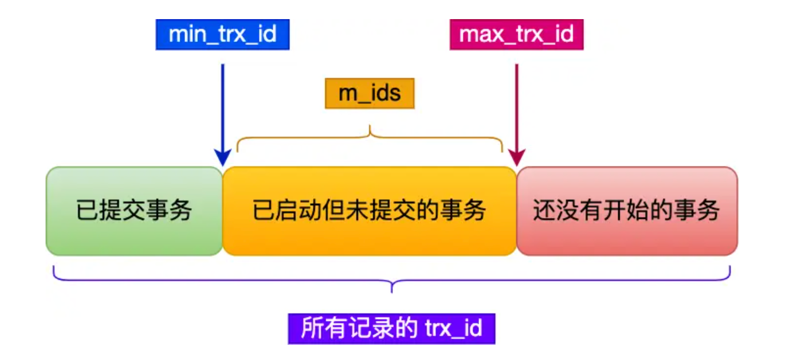
可重复读是如何工作的？
「可重复读」隔离级别是「启动事务时」生成一个 Read View，然后整个事务期间都在用这个 Read View。然后整个事务期间都在用这个 Read View，这样就保证了在事务期间读到的数据都是事务启动前的记录。
如何读到事务启动前的记录？通过undoLog 找小于该事务 的 Read View 中的 min_trx_id 值的第一条记录。
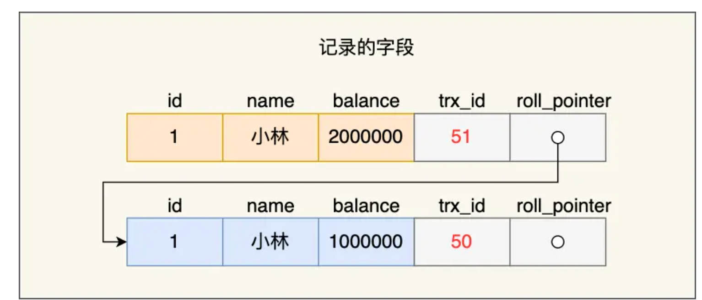
读提交是如何工作的？
「读提交」隔离级别是在「每个select 语句执行前」都会重新生成一个 Read View，也意味着，事务期间的多次读取同一条数据，前后两次读的数据可能会出现不一致，因为可能这期间另外一个事务修改了该记录，并提交了事务。
四、锁
判断加什么锁的语句
select * from performance_schema.data_locks\G;
全局锁
加锁：
flush tables with read lock执行后，整个数据库就处于只读状态了，这时其他线程执行以下操作，都会被阻塞：对数据的增删改操作，比如 insert、delete、update等语句；
对表结构的更改操作，比如 alter table、drop table 等语句。
释放全局锁：`unlock tables，当会话断开了，全局锁会被自动释放。
全局锁应用场景是什么？
全局锁主要应用于做全库逻辑备份，这样在备份数据库期间，不会因为数据或表结构的更新，而出现备份文件的数据与预期的不一样。
加全局锁又会带来什么缺点呢？
意味着整个数据库都是只读状态。那么如果数据库里有很多数据，备份就会花费很多的时间，关键是备份期间，业务只能读数据，而不能更新数据，这样会造成业务停滞。
有什么其他方式可以避免？
如果数据库的引擎支持的事务支持可重复读的隔离级别，那么在备份数据库之前先开启事务，会先创建 Read View，然后整个事务执行期间都在用这个 Read View，而且由于 MVCC 的支持，备份期间业务依然可以对数据进行更新操作。因为在可重复读的隔离级别下，即使其他事务更新了表的数据，也不会影响备份数据库时的 Read View，这就是事务四大特性中的隔离性，这样备份期间备份的数据一直是在开启事务时的数据。
表级锁
MySQL 里面表级别的锁有这几种：
表锁
如果我们想对学生表（t_student）加表锁，可以使用下面的命令：表锁除了会限制别的线程的读写外，也会限制本线程接下来的读写操作。
xxxxxxxxxx//表级别的共享锁，也就是读锁；lock tables t_student read;//表级别的独占锁，也就是写锁；lock tables t_stuent write;//释放锁unlock tables当会话退出后，也会释放所有表锁。
尽量避免在使用 InnoDB 引擎的表使用表锁，因为表锁的颗粒度太大，会影响并发性能，InnoDB 牛逼的地方在于实现了颗粒度更细的行级锁。
元数据锁（MDL）
我们不需要显示的使用 MDL，因为当我们对数据库表进行操作时，会自动给这个表加上 MDL：
对一张表进行 CRUD 操作时，加的是 MDL 读锁；
对一张表做结构变更操作的时候，加的是 MDL 写锁；
MDL 是为了保证当用户对表执行 CRUD 操作时，防止其他线程对这个表结构做了变更。
当有线程在执行 select 语句（ 加 MDL 读锁）的期间，如果有其他线程要更改该表的结构（ 申请 MDL 写锁），那么将会被阻塞，直到执行完 select 语句（ 释放 MDL 读锁）。
反之，当有线程对表结构进行变更（ 加 MDL 写锁）的期间，如果有其他线程执行了 CRUD 操作（ 申请 MDL 读锁），那么就会被阻塞，直到表结构变更完成（ 释放 MDL 写锁）。
MDL 不需要显示调用，那它是在什么时候释放的?
MDL 是在事务提交后才会释放，这意味着事务执行期间，MDL 是一直持有的。
那如果数据库有一个长事务（所谓的长事务，就是开启了事务，但是一直还没提交），那在对表结构做变更操作的时候，可能会发生意想不到的事情，比如下面这个顺序的场景：
首先，线程 A 先启用了事务（但是一直不提交），然后执行一条 select 语句，此时就先对该表加上 MDL 读锁；
然后，线程 B 也执行了同样的 select 语句，此时并不会阻塞，因为「读读」并不冲突；
接着，线程 C 修改了表字段，此时由于线程 A 的事务并没有提交，也就是 MDL 读锁还在占用着，这时线程 C 就无法申请到 MDL 写锁，就会被阻塞。
那么在线程 C 阻塞后，后续有对该表的 select 语句，就都会被阻塞，如果此时有大量该表的 select 语句的请求到来，就会有大量的线程被阻塞住，这时数据库的线程很快就会爆满了。
为什么线程 C 因为申请不到 MDL 写锁，而导致后续的申请读锁的查询操作也会被阻塞？这是因为申请 MDL 锁的操作会形成一个队列，队列中写锁获取优先级高于读锁，一旦出现 MDL 写锁等待，会阻塞后续该表的所有 CRUD 操作。
所以为了能安全的对表结构进行变更，在对表结构变更前，先要看看数据库中的长事务，是否有事务已经对表加上了 MDL 读锁，如果可以考虑 kill 掉这个长事务，然后再做表结构的变更。
意向锁
在使用 InnoDB 引擎的表里对某些记录加上「共享锁」之前，需要先在表级别加上一个「意向共享锁」；
在使用 InnoDB 引擎的表里对某些纪录加上「独占锁」之前，需要先在表级别加上一个「意向独占锁」；
也就是，当执行插入、更新、删除操作，需要先对表加上「意向独占锁」，然后对该记录加独占锁。而普通的 select 是不会加行级锁的，普通的 select 语句是利用 MVCC 实现一致性读，是无锁的。
意向共享锁和意向独占锁是表级锁，不会和行级的共享锁和独占锁发生冲突，而且意向锁之间也不会发生冲突，只会和共享表锁(lock tables ... read）和独占表锁（lock tables ... write）发生冲突。
表锁和行锁是满足读读共享、读写互斥、写写互斥的。
意向锁的目的是为了快速判断表里是否有记录被加锁： 如果没有「意向锁」，那么加「独占表锁」时，就需要遍历表里所有记录，查看是否有记录存在独占锁，这样效率会很慢。那么有了「意向锁」，由于在对记录加独占锁前，先会加上表级别的意向独占锁，那么在加「独占表锁」时，直接查该表是否有意向独占锁，如果有就意味着表里已经有记录被加了独占锁，这样就不用去遍历表里的记录。
AUTO-INC 锁：
在插入数据时，会加一个表级别的 AUTO-INC 锁，然后为被
AUTO_INCREMENT修饰的字段赋值递增的值，等插入语句执行完成后，才会把 AUTO-INC 锁释放掉。那么，一个事务在持有 AUTO-INC 锁的过程中，其他事务的如果要向该表插入语句都会被阻塞，从而保证插入数据时，被
AUTO_INCREMENT修饰的字段的值是连续递增的。在 MySQL 5.1.22 版本开始，InnoDB 存储引擎提供了一种轻量级的锁来实现自增。一样也是在插入数据的时候，会为被
AUTO_INCREMENT修饰的字段加上轻量级锁，然后给该字段赋值一个自增的值，就把这个轻量级锁释放了，而不需要等待整个插入语句执行完后才释放锁。
行锁
InnoDB 引擎是支持行级锁的，而 MyISAM 引擎并不支持行级锁。
普通的 select 语句是不会对记录加锁的，因为它属于快照读。如果要在查询时对记录加行锁，可以使用下面这两个方式，这种查询会加锁的语句称为锁定读。下面这两条语句必须在一个事务中，因为当事务提交了，锁就会被释放，所以在使用这两条语句的时候，要加上 begin、start transaction 或者 set autocommit = 0。
xxxxxxxxxx//对读取的记录加共享锁select ... lock in share mode;
//对读取的记录加独占锁select ... for update;共享锁（S锁）满足读读共享，读写互斥。独占锁（X锁）满足写写互斥、读写互斥。
Record Lock：Record Lock 称为记录锁，锁住的是一条记录。而且记录锁是有 S 锁和 X 锁之分的。
当一个事务对一条记录加了 S 型记录锁后，其他事务也可以继续对该记录加 S 型记录锁（S 型与 S 锁兼容），但是不可以对该记录加 X 型记录锁（S 型与 X 锁不兼容）;
当一个事务对一条记录加了 X 型记录锁后，其他事务既不可以对该记录加 S 型记录锁（S 型与 X 锁不兼容），也不可以对该记录加 X 型记录锁（X 型与 X 锁不兼容）。
Gap Lock：Gap Lock 称为间隙锁，只存在于可重复读隔离级别，目的是为了解决可重复读隔离级别下幻读的现象。
假设，表中有一个范围 id 为（3，5）间隙锁，那么其他事务就无法插入 id = 4 这条记录了，这样就有效的防止幻读现象的发生。
间隙锁虽然存在 X 型间隙锁和 S 型间隙锁，但是并没有什么区别，间隙锁之间是兼容的，即两个事务可以同时持有包含共同间隙范围的间隙锁，并不存在互斥关系，因为间隙锁的目的是防止插入幻影记录而提出的。
Next-Key Lock：Next-Key Lock 称为临键锁，是 Record Lock + Gap Lock 的组合，锁定一个范围，并且锁定记录本身。
next-key lock 是包含间隙锁+记录锁的，如果一个事务获取了 X 型的 next-key lock，那么另外一个事务在获取相同范围的 X 型的 next-key lock 时，是会被阻塞的。
插入意向锁
一个事务在插入一条记录的时候，需要判断插入位置是否已被其他事务加了间隙锁（next-key lock 也包含间隙锁）。
如果有的话，插入操作就会发生阻塞，直到拥有间隙锁的那个事务提交为止（释放间隙锁的时刻），在此期间会生成一个插入意向锁，表明有事务想在某个区间插入新记录，但是现在处于等待状态。
举个例子，假设事务 A 已经对表加了一个范围 id 为（3，5）间隙锁。当事务 A 还没提交的时候，事务 B 向该表插入一条 id = 4 的新记录，这时会判断到插入的位置已经被事务 A 加了间隙锁，于是事物 B 会生成一个插入意向锁，然后将锁的状态设置为等待状态（PS：MySQL 加锁时，是先生成锁结构，然后设置锁的状态，如果锁状态是等待状态，并不是意味着事务成功获取到了锁，只有当锁状态为正常状态时，才代表事务成功获取到了锁），此时事务 B 就会发生阻塞，直到事务 A 提交了事务。
update 没加索引会锁全表？
InnoDB 存储引擎自己实现了行锁，通过 next-key 锁（记录锁和间隙锁的组合）来锁住记录本身和记录之间的“间隙”，防止其他事务在这个记录之间插入新的记录，从而避免了幻读现象。
当我们执行 update 语句时，实际上是会对记录加独占锁（X 锁）的，如果其他事务对持有独占锁的记录进行修改时是会被阻塞的。另外，这个锁并不是执行完 update 语句就会释放的，而是会等事务结束时才会释放。
在 InnoDB 事务中，对记录加锁带基本单位是 next-key 锁，但是会因为一些条件会退化成间隙锁，或者记录锁。加锁的位置准确的说，锁是加在索引上的而非行上。
比如，在 update 语句的 where 条件使用了唯一索引，那么 next-key 锁会退化成记录锁，也就是只会给一行记录加锁。
但是，在 update 语句的 where 条件没有使用索引，就会全表扫描，于是就会对所有记录加上 next-key 锁（记录锁 + 间隙锁），相当于把整个表锁住了。
那 update 语句的 where 带上索引就能避免全表记录加锁了吗？
关键还得看这条语句在执行过程种，优化器最终选择的是索引扫描，还是全表扫描，如果走了全表扫描，就会对全表的记录加锁了。
我们可以将 MySQL 里的
sql_safe_updates参数设置为 1，开启安全更新模式。大致的意思是，当 sql_safe_updates 设置为 1 时。update 语句必须满足如下条件之一才能执行成功：
使用 where，并且 where 条件中必须有索引列；
使用 limit；
同时使用 where 和 limit，此时 where 条件中可以没有索引列；
delete 语句必须满足以下条件能执行成功：
同时使用 where 和 limit，此时 where 条件中可以没有索引列；
如果 where 条件带上了索引列，但是优化器最终扫描选择的是全表，而不是索引的话，我们可以使用
force index([index_name])可以告诉优化器使用哪个索引，以此避免有几率锁全表带来的隐患。
死锁
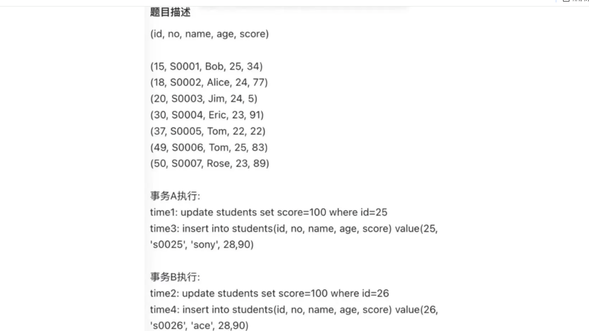
time1 : 共加了两个锁，分别是：
表锁：X 类型的意向锁；
行锁：X 类型的间隙锁， 间隙锁的范围
(20, 30)。
time2 : 共加了两个锁，分别是：
表锁：X 类型的意向锁；
行锁：X 类型的间隙锁， 间隙锁的范围
(20, 30)。
Time 3 : 陷入等待状态，希望加插入意向锁，但是被阻塞了
Time 4 : 陷入等待状态，希望加插入意向锁，但是被阻塞了
两个事务即使生成的间隙锁的范围是一样的，也不会发生冲突，因为间隙锁目的是为了防止其他事务插入数据，因此间隙锁与间隙锁之间是相互兼容的。
在执行插入语句时，如果插入的记录在其他事务持有间隙锁范围内，插入语句就会被阻塞，因为插入语句在碰到间隙锁时，会生成一个插入意向锁，然后插入意向锁和间隙锁之间是互斥的关系。
如果两个事务分别向对方持有的间隙锁范围内插入一条记录，而插入操作为了获取到插入意向锁，都在等待对方事务的间隙锁释放，于是就造成了循环等待，满足了死锁的四个条件：互斥、占有且等待、不可强占用、循环等待，因此发生了死锁。
如何避免死锁？
死锁的四个必要条件：互斥、占有且等待、不可强占用、循环等待。只要系统发生死锁，这些条件必然成立，但是只要破坏任意一个条件就死锁就不会成立。
设置事务等待锁的超时时间。当一个事务的等待时间超过该值后，就对这个事务进行回滚，于是锁就释放了，另一个事务就可以继续执行了。在 InnoDB 中，参数 innodb_lock_wait_timeout 是用来设置超时时间的，默认值时 50 秒。
开启主动死锁检测。主动死锁检测在发现死锁后，主动回滚死锁链条中的某一个事务，让其他事务得以继续执行。将参数 innodb_deadlock_detect 设置为 on，表示开启这个逻辑，默认就开启。
五、日志
那么，执行一条 update 语句，期间发生了什么？，比如这一条 update 语句：
xxxxxxxxxxUPDATE t_user SET name = 'xiaolin' WHERE id = 1;查询语句的那一套流程，更新语句也是同样会走一遍：
客户端先通过连接器建立连接，连接器自会判断用户身份；
因为这是一条 update 语句，所以不需要经过查询缓存，但是表上有更新语句，是会把整个表的查询缓存清空的，所以说查询缓存很鸡肋，在 MySQL 8.0 就被移除这个功能了；
解析器会通过词法分析识别出关键字 update，表名等等，构建出语法树，接着还会做语法分析，判断输入的语句是否符合 MySQL 语法；
预处理器会判断表和字段是否存在；
优化器确定执行计划，因为 where 条件中的 id 是主键索引，所以决定要使用 id 这个索引；
执行器负责具体执行，找到这一行，然后更新。
不过，更新语句的流程会涉及到 undo log（回滚日志）、redo log（重做日志） 、binlog （归档日志）这三种日志：
undo log（回滚日志）：是 Innodb 存储引擎层生成的日志，实现了事务中的原子性，主要用于事务回滚和 MVCC。
redo log（重做日志）：是 Innodb 存储引擎层生成的日志，实现了事务中的持久性，主要用于掉电等故障恢复；
binlog （归档日志）：是 Server 层生成的日志，主要用于数据备份和主从复制；
为什么需要 undo log？
undo log 是一种用于撤销回退的日志。在事务没提交之前，MySQL 会先记录更新前的数据到 undo log 日志文件里面，当事务回滚时，可以利用 undo log 来进行回滚。
流程：
每当 InnoDB 引擎对一条记录进行操作（修改、删除、新增）时，要把回滚时需要的信息都记录到 undo log 里，比如：
在插入一条记录时，要把这条记录的主键值记下来，这样之后回滚时只需要把这个主键值对应的记录删掉就好了；
在删除一条记录时，要把这条记录中的内容都记下来，这样之后回滚时再把由这些内容组成的记录插入到表中就好了；
在更新一条记录时，要把被更新的列的旧值记下来，这样之后回滚时再把这些列更新为旧值就好了。
在发生回滚时，就读取 undo log 里的数据，然后做原先相反操作。比如当 delete 一条记录时，undo log 中会把记录中的内容都记下来，然后执行回滚操作的时候，就读取 undo log 里的数据，然后进行 insert 操作。不同的操作，需要记录的内容也是不同的，所以不同类型的操作（修改、删除、新增）产生的 undo log 的格式也是不同的
一条记录的每一次更新操作产生的 undo log 格式都有一个 roll_pointer 指针和一个 trx_id 事务id：
通过 trx_id 可以知道该记录是被哪个事务修改的；
通过 roll_pointer 指针可以将这些 undo log 串成一个链表，这个链表就被称为版本链；
undo log 两大作用：
实现事务回滚，保障事务的原子性。事务处理过程中，如果出现了错误或者用户执 行了 ROLLBACK 语句，MySQL 可以利用 undo log 中的历史数据将数据恢复到事务开始之前的状态。
实现 MVCC（多版本并发控制）关键因素之一。MVCC 是通过 ReadView + undo log 实现的。undo log 为每条记录保存多份历史数据，MySQL 在执行快照读（普通 select 语句）的时候，会根据事务的 Read View 里的信息，顺着 undo log 的版本链找到满足其可见性的记录。
开启事务后，InnoDB 层更新记录前，首先要记录相应的 undo log，如果是更新操作，需要把被更新的列的旧值记下来，也就是要生成一条 undo log，undo log 会写入 Buffer Pool 中的 Undo 页面。
undo log 和数据页的刷盘策略是一样的，都需要通过 redo log 保证持久化。对 undo 页的修改也都会记录到 redo log。redo log 会每秒刷盘，提交事务时也会刷盘，数据页和 undo 页都是靠这个机制保证持久化的。
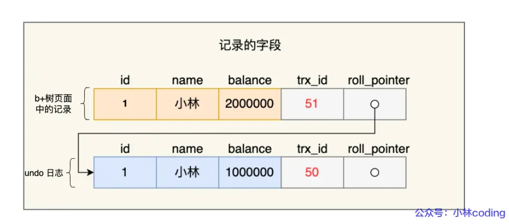
为什么需要 Buffer Pool？
Innodb 存储引擎设计了一个缓冲池（Buffer Pool），来提高数据库的读写性能。（在Innodb存储引擎）
有了 Buffer Pool 后：
当读取数据时，如果数据存在于 Buffer Pool 中，客户端就会直接读取 Buffer Pool 中的数据，否则再去磁盘中读取。
当修改数据时，如果数据存在于 Buffer Pool 中，那直接修改 Buffer Pool 中数据所在的页，然后将其页设置为脏页（该页的内存数据和磁盘上的数据已经不一致），为了减少磁盘I/O，不会立即将脏页写入磁盘，后续由后台线程选择一个合适的时机将脏页写入到磁盘。
Buffer Pool 有多大？
Buffer Pool 是在 MySQL 启动的时候，向操作系统申请的一片连续的内存空间，默认配置下 Buffer Pool 只有 128MB 。
可以通过调整 innodb_buffer_pool_size 参数来设置 Buffer Pool 的大小，一般建议设置成可用物理内存的 60%~80%。
Buffer Pool 缓存什么？
InnoDB 会把存储的数据划分为若干个「页」，以页作为磁盘和内存交互的基本单位，一个页的默认大小为 16KB。因此，Buffer Pool 同样需要按「页」来划分。
在 MySQL 启动的时候，InnoDB 会为 Buffer Pool 申请一片连续的内存空间，然后按照默认的16KB的大小划分出一个个的页， Buffer Pool 中的页就叫做缓存页。此时这些缓存页都是空闲的，之后随着程序的运行，才会有磁盘上的页被缓存到 Buffer Pool 中。
Buffer Pool 除了缓存「索引页」和「数据页」，还包括了 undo 页，插入缓存、自适应哈希索引、锁信息等等。
为了更好的管理这些在 Buffer Pool 中的缓存页，InnoDB 为每一个缓存页都创建了一个控制块，控制块信息包括「缓存页的表空间、页号、缓存页地址、链表节点」等等。
控制块也是占有内存空间的，它是放在 Buffer Pool 的最前面，接着才是缓存页
当我们查询一条记录时，InnoDB 是会把整个页的数据加载到 Buffer Pool 中，因为，通过索引只能定位到磁盘中的页，而不能定位到页中的一条记录。将页加载到 Buffer Pool 后，再通过页里的页目录去定位到某条具体的记录。
控制块和缓存页之间灰色部分称为碎片空间。每一个控制块都对应一个缓存页，那在分配足够多的控制块和缓存页后，可能剩余的那点儿空间不够一对控制块和缓存页的大小，自然就用不到喽，这个用不到的那点儿内存空间就被称为碎片了。
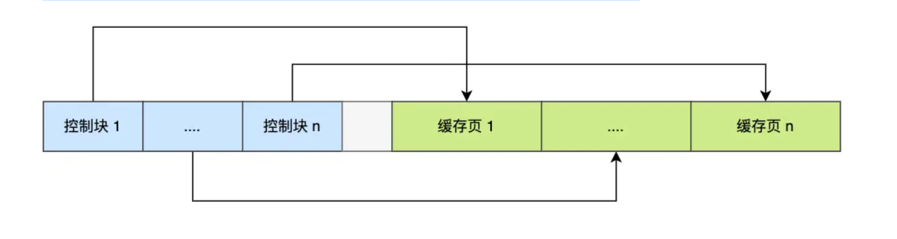
如何管理 Buffer Pool？
如何管理空闲页？
Buffer Pool 是一片连续的内存空间，当 MySQL 运行一段时间后，这片连续的内存空间中的缓存页既有空闲的，也有被使用的。为了能够快速找到空闲的缓存页，可以使用链表结构，将空闲缓存页的「控制块」作为链表的节点，这个链表称为 Free 链表（空闲链表）。
Free 链表上除了有控制块，还有一个头节点，该头节点包含链表的头节点地址，尾节点地址，以及当前链表中节点的数量等信息。
Free 链表节点是一个一个的控制块，而每个控制块包含着对应缓存页的地址，所以相当于 Free 链表节点都对应一个空闲的缓存页。
有了 Free 链表后，每当需要从磁盘中加载一个页到 Buffer Pool 中时，就从 Free链表中取一个空闲的缓存页，并且把该缓存页对应的控制块的信息填上，然后把该缓存页对应的控制块从 Free 链表中移除。
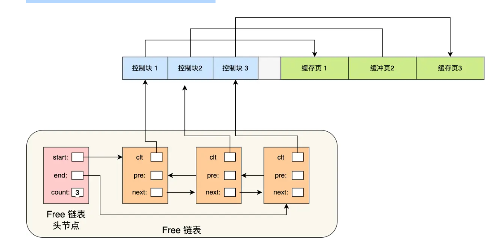
如何管理脏页？
设计 Buffer Pool 除了能提高读性能，还能提高写性能，也就是更新数据的时候，不需要每次都要写入磁盘，而是将 Buffer Pool 对应的缓存页标记为脏页，然后再由后台线程将脏页写入到磁盘。
那为了能快速知道哪些缓存页是脏的，于是就设计出 Flush 链表，它跟 Free 链表类似的，链表的节点也是控制块，区别在于 Flush 链表的元素都是脏页。
有了 Flush 链表后，后台线程就可以遍历 Flush 链表，将脏页写入到磁盘。
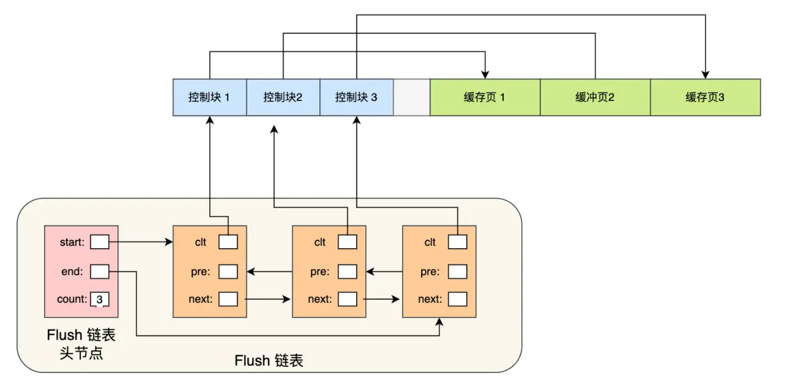
如何提高缓存命中率？
uffer Pool 的大小是有限的，对于一些频繁访问的数据我们希望可以一直留在 Buffer Pool 中，而一些很少访问的数据希望可以在某些时机可以淘汰掉，从而保证 Buffer Pool 不会因为满了而导致无法再缓存新的数据，同时还能保证常用数据留在 Buffer Pool 中。
简单的 LRU 算法的实现思路是这样的：
当访问的页在 Buffer Pool 里，就直接把该页对应的 LRU 链表节点移动到链表的头部。
当访问的页不在 Buffer Pool 里，除了要把页放入到 LRU 链表的头部，还要淘汰 LRU 链表末尾的节点。
简单的 LRU 算法并没有被 MySQL 使用，因为简单的 LRU 算法无法避免下面这两个问题：
预读失效；
问题：MySQL 在加载数据页时，会提前把它相邻的数据页一并加载进来，目的是为了减少磁盘 IO。但是可能这些被提前加载进来的数据页，并没有被访问，相当于这个预读是白做了，这个就是预读失效。如果使用简单的 LRU 算法，就会把预读页放到 LRU 链表头部，而当 Buffer Pool空间不够的时候，还需要把末尾的页淘汰掉。如果这些预读页如果一直不会被访问到，就会出现一个很奇怪的问题，不会被访问的预读页却占用了 LRU 链表前排的位置，而末尾淘汰的页，可能是频繁访问的页，这样就大大降低了缓存命中率。
解决：让预读的页停留在 Buffer Pool 里的时间要尽可能的短，让真正被访问的页才移动到 LRU 链表的头部，从而保证真正被读取的热数据留在 Buffer Pool 里的时间尽可能长。
将 LRU 划分了 2 个区域：old 区域 和 young 区域
划分这两个区域后，预读的页就只需要加入到 old 区域的头部，当页被真正访问的时候，才将页插入 young 区域的头部。如果预读的页一直没有被访问，就会从 old 区域移除，这样就不会影响 young 区域中的热点数据。
Buffer Pool 污染
当某一个 SQL 语句扫描了大量的数据时，在 Buffer Pool 空间比较有限的情况下，可能会将 Buffer Pool 里的所有页都替换出去，导致大量热数据被淘汰了，等这些热数据又被再次访问的时候，由于缓存未命中，就会产生大量的磁盘 IO，MySQL 性能就会急剧下降，这个过程被称为 Buffer Pool 污染。
进入到 young 区域条件增加了一个停留在 old 区域的时间判断。只有同时满足「被访问」与「在 old 区域停留时间超过 1 秒」两个条件，才会被插入到 young 区域头部，这样就解决了 Buffer Pool 污染的问题 。
MySQL 针对 young 区域其实做了一个优化，为了防止 young 区域节点频繁移动到头部。young 区域前面 1/4 被访问不会移动到链表头部，只有后面的 3/4被访问了才会。
脏页什么时候会被刷入磁盘？
引入了 Buffer Pool 后，当修改数据时，首先是修改 Buffer Pool 中数据所在的页，然后将其页设置为脏页，但是磁盘中还是原数据。
下面几种情况会触发脏页的刷新：
当 redo log 日志满了的情况下，会主动触发脏页刷新到磁盘；
Buffer Pool 空间不足时，需要将一部分数据页淘汰掉，如果淘汰的是脏页，需要先将脏页同步到磁盘；
MySQL 认为空闲时，后台线程会定期将适量的脏页刷入到磁盘；
MySQL 正常关闭之前，会把所有的脏页刷入到磁盘；
为什么需要 redo log ？
为了防止断电导致数据丢失的问题，当有一条记录需要更新的时候，InnoDB 引擎就会先更新内存（同时标记为脏页），然后将本次对这个页的修改以 redo log 的形式记录下来，这个时候更新就算完成了。
后续，InnoDB 引擎会在适当的时候，由后台线程将缓存在 Buffer Pool 的脏页刷新到磁盘里，这就是 WAL （Write-Ahead Logging）技术。WAL 技术指的是， MySQL 的写操作并不是立刻写到磁盘上，而是先写日志，然后在合适的时间再写到磁盘上。
redo log 是物理日志，记录了某个数据页做了什么修改，比如对 XXX 表空间中的 YYY 数据页 ZZZ 偏移量的地方做了AAA 更新，每当执行一个事务就会产生这样的一条或者多条物理日志。在事务提交时，只要先将 redo log 持久化到磁盘即可，可以不需要等到将缓存在 Buffer Pool 里的脏页数据持久化到磁盘。当系统崩溃时，虽然脏页数据没有持久化，但是 redo log 已经持久化，接着 MySQL 重启后，可以根据 redo log 的内容，将所有数据恢复到最新的状态。
开启事务后，InnoDB 层更新记录前，首先要记录相应的 undo log，如果是更新操作，需要把被更新的列的旧值记下来，也就是要生成一条 undo log，undo log 会写入 Buffer Pool 中的 Undo 页面。不过，在内存修改该 Undo 页面后，需要记录对应的 redo log。
redo log 和 undo log 区别在哪？
redo log 记录了此次事务「完成后」的数据状态，记录的是更新之后的值；
undo log 记录了此次事务「开始前」的数据状态，记录的是更新之前的值；
事务提交之前发生了崩溃，重启后会通过 undo log 回滚事务，事务提交之后发生了崩溃，重启后会通过 redo log 恢复事务。
为什么需要 redo log ？
实现事务的持久性，让 MySQL 有 crash-safe 的能力，能够保证 MySQL 在任何时间段突然崩溃，重启后之前已提交的记录都不会丢失；
将写操作从「随机写」变成了「顺序写」，提升 MySQL 写入磁盘的性能。
产生的 redo log 是直接写入磁盘的吗？
执行一个事务的过程中，产生的 redo log 也不是直接写入磁盘的，因为这样会产生大量的 I/O 操作，而且磁盘的运行速度远慢于内存。
所以，redo log 也有自己的缓存—— redo log buffer，每当产生一条 redo log 时，会先写入到 redo log buffer，后续在持久化到磁盘
redo log 什么时候刷盘？
MySQL 正常关闭时；
当 redo log buffer 中记录的写入量大于 redo log buffer 内存空间的一半时，会触发落盘；
InnoDB 的后台线程每隔 1 秒，将 redo log buffer 持久化到磁盘。
每次事务提交时都将缓存在 redo log buffer 里的 redo log 直接持久化到磁盘（这个策略可由 innodb_flush_log_at_trx_commit 参数控制。
redo log 文件写满了怎么办？
redo log 是循环写的方式，相当于一个环形，InnoDB 用 write pos 表示 redo log 当前记录写到的位置，用 checkpoint 表示当前要擦除的位置。
如果 write pos 追上了 checkpoint，就意味着 redo log 文件满了，这时 MySQL 不能再执行新的更新操作，也就是说 MySQL 会被阻塞（因此所以针对并发量大的系统，适当设置 redo log 的文件大小非常重要），此时会停下来将 Buffer Pool 中的脏页刷新到磁盘中，然后标记 redo log 哪些记录可以被擦除，接着对旧的 redo log 记录进行擦除，等擦除完旧记录腾出了空间，checkpoint 就会往后移动（图中顺时针），然后 MySQL 恢复正常运行，继续执行新的更新操作。
所以，一次 checkpoint 的过程就是脏页刷新到磁盘中变成干净页，然后标记 redo log 哪些记录可以被覆盖的过程。
为什么需要 binlog ？
MySQL 在完成一条更新操作后，Server 层还会生成一条 binlog，等之后事务提交的时候，会将该事物执行过程中产生的所有 binlog 统一写 入 binlog 文件。binlog 文件是记录了所有数据库表结构变更和表数据修改的日志，不会记录查询类的操作，比如 SELECT 和 SHOW 操作。
最开始 MySQL 里并没有 InnoDB 引擎，MySQL 自带的引擎是 MyISAM，但是 MyISAM 没有 crash-safe 的能力，binlog 日志只能用于归档。而 InnoDB 是另一个公司以插件形式引入 MySQL 的，既然只依靠 binlog 是没有 crash-safe 能力的，所以 InnoDB 使用 redo log 来实现 crash-safe 能力。
redo log 和 binlog 有什么区别？
适用对象不同：
binlog 是 MySQL 的 Server 层实现的日志，所有存储引擎都可以使用；
redo log 是 Innodb 存储引擎实现的日志；
文件格式不同：
binlog 有 3 种格式类型，分别是 STATEMENT（默认格式）、ROW、 MIXED.
STATEMENT: 每一条修改数据的 SQL 都会被记录到 binlog 中，主从复制中 slave 端再根据 SQL 语句重现。
ROW：记录行数据最终被修改成什么样了
MIXED：包含了 STATEMENT 和 ROW 模式，它会根据不同的情况自动使用 ROW 模式和 STATEMENT 模式；
redo log 是物理日志，记录的是在某个数据页做了什么修改，比如对 XXX 表空间中的 YYY 数据页 ZZZ 偏移量的地方做了AAA 更新；
写入方式不同：
binlog 是追加写，写满一个文件，就创建一个新的文件继续写，不会覆盖以前的日志，保存的是全量的日志。
redo log 是循环写，日志空间大小是固定，全部写满就从头开始，保存未被刷入磁盘的脏页日志。
4、用途不同：
binlog 用于备份恢复、主从复制；
redo log 用于掉电等故障恢复。
如果不小心整个数据库的数据被删除了，能使用 redo log 文件恢复数据吗？
不可以使用 redo log 文件恢复，只能使用 binlog 文件恢复。因为 redo log 文件是循环写，是会边写边擦除日志的，只记录未被刷入磁盘的数据的物理日志，已经刷入磁盘的数据都会从 redo log 文件里擦除。
binlog 文件保存的是全量的日志，也就是保存了所有数据变更的情况，理论上只要记录在 binlog 上的数据，都可以恢复，所以如果不小心整个数据库的数据被删除了，得用 binlog 文件恢复数据。
主从复制是怎么实现？
MySQL 的主从复制依赖于 binlog ，也就是记录 MySQL 上的所有变化并以二进制形式保存在磁盘上。复制的过程就是将 binlog 中的数据从主库传输到从库上。
这个过程一般是异步的，也就是主库上执行事务操作的线程不会等待复制 binlog 的线程同步完成。
MySQL 主库在收到客户端提交事务的请求之后，会先写入 binlog，再提交事务，更新存储引擎中的数据，事务提交完成后，返回给客户端“操作成功”的响应。
从库会创建一个专门的 I/O 线程，连接主库的 log dump 线程，来接收主库的 binlog 日志，再把 binlog 信息写入 relay log 的中继日志里，再返回给主库“复制成功”的响应。
从库会创建一个用于回放 binlog 的线程，去读 relay log 中继日志，然后回放 binlog 更新存储引擎中的数据，最终实现主从的数据一致性。
在完成主从复制之后，你就可以在写数据时只写主库，在读数据时只读从库，这样即使写请求会锁表或者锁记录，也不会影响读请求的执行。
从库是不是越多越好？
从库数量增加，从库连接上来的 I/O 线程也比较多，主库也要创建同样多的 log dump 线程来处理复制的请求，对主库资源消耗比较高，同时还受限于主库的网络带宽。所以在实际使用中，一个主库一般跟 2～3 个从库（1 套数据库，1 主 2 从 1 备主），这就是一主多从的 MySQL 集群结构。
MySQL 主从复制还有哪些模型？
同步复制：MySQL 主库提交事务的线程要等待所有从库的复制成功响应，才返回客户端结果。这种方式在实际项目中，基本上没法用，原因有两个：一是性能很差，因为要复制到所有节点才返回响应；二是可用性也很差，主库和所有从库任何一个数据库出问题，都会影响业务。
异步复制（默认模型）：MySQL 主库提交事务的线程并不会等待 binlog 同步到各从库，就返回客户端结果。这种模式一旦主库宕机，数据就会发生丢失。
半同步复制：MySQL 5.7 版本之后增加的一种复制方式，介于两者之间，事务线程不用等待所有的从库复制成功响应，只要一部分复制成功响应回来就行，比如一主二从的集群，只要数据成功复制到任意一个从库上，主库的事务线程就可以返回给客户端。这种半同步复制的方式，兼顾了异步复制和同步复制的优点，即使出现主库宕机，至少还有一个从库有最新的数据，不存在数据丢失的风险。
binlog 什么时候刷盘？
事务执行过程中，先把日志写到 binlog cache（Server 层的 cache），在事务提交的时候，执行器把 binlog cache 里的完整事务写入到 binlog 文件中，并清空 binlog cache。
为什么需要两阶段提交？
事务提交后，redo log 和 binlog 都要持久化到磁盘，但是这两个是独立的逻辑，可能出现半成功的状态，这样就造成两份日志之间的逻辑不一致。
举个例子，假设 id = 1 这行数据的字段 name 的值原本是 'jay'，然后执行 UPDATE t_user SET name = 'xiaolin' WHERE id = 1; 如果在持久化 redo log 和 binlog 两个日志的过程中，出现了半成功状态，那么就有两种情况：
如果在将 redo log 刷入到磁盘之后， MySQL 突然宕机了，而 binlog 还没有来得及写入。MySQL 重启后，通过 redo log 能将 Buffer Pool 中 id = 1 这行数据的 name 字段恢复到新值 xiaolin，但是 binlog 里面没有记录这条更新语句，在主从架构中，binlog 会被复制到从库，由于 binlog 丢失了这条更新语句，从库的这一行 name 字段是旧值 jay，与主库的值不一致性；
如果在将 binlog 刷入到磁盘之后， MySQL 突然宕机了，而 redo log 还没有来得及写入。由于 redo log 还没写，崩溃恢复以后这个事务无效，所以 id = 1 这行数据的 name 字段还是旧值 jay，而 binlog 里面记录了这条更新语句，在主从架构中，binlog 会被复制到从库，从库执行了这条更新语句，那么这一行 name 字段是新值 xiaolin，与主库的值不一致性；
可以看到，在持久化 redo log 和 binlog 这两份日志的时候，如果出现半成功的状态，就会造成主从环境的数据不一致性。这是因为 redo log 影响主库的数据，binlog 影响从库的数据，所以 redo log 和 binlog 必须保持一致才能保证主从数据一致。
MySQL 为了避免出现两份日志之间的逻辑不一致的问题，使用了「两阶段提交」来解决，两阶段提交其实是分布式事务一致性协议，它可以保证多个逻辑操作要不全部成功，要不全部失败，不会出现半成功的状态。
两阶段提交把单个事务的提交拆分成了 2 个阶段，分别是「准备（Prepare）阶段」和「提交（Commit）阶段」，每个阶段都由协调者（Coordinator）和参与者（Participant）共同完成。注意，不要把提交（Commit）阶段和 commit 语句混淆了，commit 语句执行的时候，会包含提交（Commit）阶段。
prepare 阶段：将 XID（内部 XA 事务的 ID） 写入到 redo log，同时将 redo log 对应的事务状态设置为 prepare，然后将 redo log 持久化到磁盘（innodb_flush_log_at_trx_commit = 1 的作用）；
commit 阶段：把 XID 写入到 binlog，然后将 binlog 持久化到磁盘（sync_binlog = 1 的作用），接着调用引擎的提交事务接口，将 redo log 状态设置为 commit，此时该状态并不需要持久化到磁盘，只需要 write 到文件系统的 page cache 中就够了，因为只要 binlog 写磁盘成功，就算 redo log 的状态还是 prepare 也没有关系，一样会被认为事务已经执行成功；
五、存储引擎
InnoDB
是Mysql默认的事务型存储引擎，只有在需要它不支持的特性时，才考虑使用其他存储引擎。
实现了四个标准的隔离级别，默认级别是可重复读，在可重复读隔离级别下，通过多版本并发控制(MVCC)+Next-key-Locking防止幻影读。
主索引是聚簇索引，在索引中保存了数据，从而避免直接读取磁盘，因此对查询性能有很大的提升。
内部做了很多优化，包括从磁盘读取数据时采用的可预测性读、能够加快读操作并且自动创建的自适应哈希索引、能够加速插入操作的插入缓冲区等。
支持真正的在线热备份(热备份是系统处于正常运转状态下的备份)。其它存储引擎不支持在线热备份，要获取一致性视图需要停止对所有表的写入，而在读写混合场景中，停止写入可能也意味着停止读取。
InnoDB 是如何存储数据的？
因此，InnoDB 的数据是按「数据页」为单位来读写的，也就是说，当需要读一条记录的时候，并不是将这个记录本身从磁盘读出来，而是以页为单位，将其整体读入内存。
数据库的 I/O 操作的最小单位是页，InnoDB 数据页的默认大小是 16KB，意味着数据库每次读写都是以 16KB 为单位的，一次最少从磁盘中读取 16K 的内容到内存中，一次最少把内存中的 16K 内容刷新到磁盘中。
数据页中的记录按照「主键」顺序组成单向链表，单向链表的特点就是插入、删除非常方便，但是检索效率不高，最差的情况下需要遍历链表上的所有节点才能完成检索。
因此，数据页中有一个页目录，起到记录的索引作用，就像我们书那样，针对书中内容的每个章节设立了一个目录，想看某个章节的时候，可以查看目录，快速找到对应的章节的页数，而数据页中的页目录就是为了能快速找到记录。
页目录创建的过程如下：
将所有的记录划分成几个组，这些记录包括最小记录和最大记录，但不包括标记为“已删除”的记录；
每个记录组的最后一条记录就是组内最大的那条记录，并且最后一条记录的头信息中会存储该组一共有多少条记录，作为 n_owned 字段（上图中粉红色字段）
页目录用来存储每组最后一条记录的地址偏移量，这些地址偏移量会按照先后顺序存储起来，每组的地址偏移量也被称之为槽（slot），每个槽相当于指针指向了不同组的最后一个记录。
为了高效查询记录所在的数据页，InnoDB 采用 b+ 树作为索引，每个节点都是一个数据页。
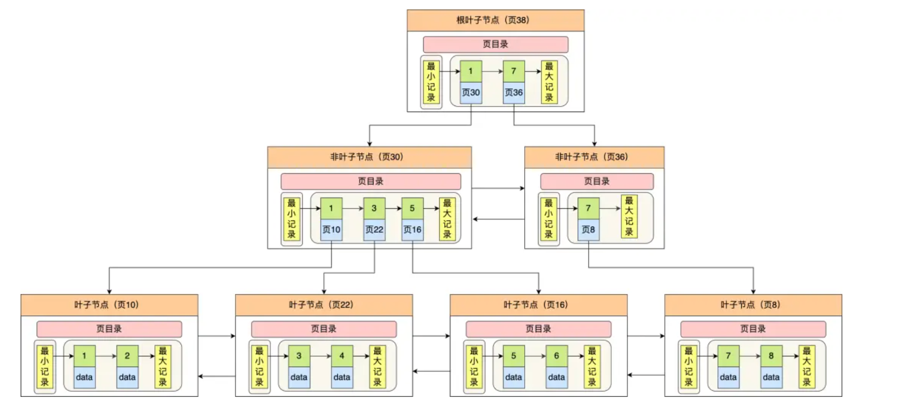
MyISAM
设计简单，数据以紧密格式存储。对于只读数据，或者表比较小、可以容忍修复操作，则依然可以使用它。
提供了大量的特性，包括压缩表、空间数据索引等。
不支持事务。
非聚簇索引，数据文件是分离的，索引保存的是数据文件的指针。
不支持行级锁，只能对整张表加锁，读取时会对需要读到的所有表加共享锁，写入时则对表加排它锁。但在表有读取操作的同时，也可以往表中插入新的记录，这被称为并发插入（CONCURRENT INSERT）。
可以手工或者自动执行检查和修复操作，但是和事务恢复以及崩溃恢复不同，可能导致一些数据丢失，而且修复操作是非常慢的。
如果指定了 DELAY_KEY_WRITE 选项，在每次修改执行完成时，不会立即将修改的索引数据写入磁盘，而是会写到内存中的键缓冲区，只有在清理键缓冲区或者关闭表的时候才会将对应的索引块写入磁盘。这种方式可以极大的提升写入性能，但是在数据库或者主机崩溃时会造成索引损坏，需要执行修复操作。
比较
事务: InnoDB是事务型的，可以使用 Commit 和 Rollback 语句。
并发：MyISAM只支持表级锁，而InnoDB还支持行级锁。
外键：InnoDB 支持外键。
备份: InnoDB 支持在线热备份(热备份是系统处于正常运转状态下的备份)。
崩溃恢复：MyISAM 崩溃后发生损坏的概率比 InnoDB 高很多，而且恢复的速度也更慢。
其他特性： MyISAM 支持压缩表和空间数据索引。
七、数据类型
整型
tinyint(8),smallint(16),Mediumint(24),int(32),bigint(64)位存储空间，一般情况下越小的列越好。
int(11)中的数字只是规定了交互工具显示字符的个数，对于存储和计算来说是没有意义的。
浮点数
float和double为浮点类型，decimal为高精度小数类型，CPU原生支持浮点运算，但是不支持decimal类型的计算，因此decimal的计算比浮点类型需要更高的代价。
FLOAT、DOUBLE 和 DECIMAL 都可以指定列宽，例如 DECIMAL(18, 9) 表示总共 18 位，取 9 位存储小数部分，剩下 9 位存储整数部分。
字符串
char(定长)和varchar(变长)。
VARCHAR 这种变长类型能够节省空间，因为只需要存储必要的内容。
在进行存储和检索时，会保留 VARCHAR 末尾的空格，而会删除 CHAR 末尾的空格。
时间和日期
datatime
能够保存从1000年到9999年的日期和时间，精度为秒，使用8字节的存储空间。
他与时区无关。
timestamp
和UNIX时间戳相同，保存从1970年1月1日以来的秒数，使用四个字节，只能表示从170年到2038年。
它和时区有关，也就是一个时间戳在不同的时区所代表的具体时间是不同的。
MySQL 提供了 FROM_UNIXTIME() 函数把 UNIX 时间戳转换为日期，并提供了 UNIX_TIMESTAMP() 函数把日期转换为 UNIX 时间戳。
默认情况下，如果插入时没有指定 TIMESTAMP 列的值，会将这个值设置为当前时间。
应该尽量使用 TIMESTAMP，因为它比 DATETIME 空间效率更高。
八、切分
水平切分(sharding)
将同一个表中的记录拆分到多个结构相同的表中。
当一个表的数据不断增多的时候，可以将数据分布到集群的不同节点上，从而缓解单个数据库的压力。

垂直切分
垂直切分是将一张表按列切分成多个表，通常是按照列的关系密集程度进行切分，也可以利用垂直切分将经常被使用的列和不经常被使用的列切分到不同的表中。
在数据库的层面使用垂直切分将按数据库中表的密集程度部署到不同的库中，例如将原来的电商数据库垂直切分成商品数据库、用户数据库等。

Sharding 策略
哈希取模:hash(key) % N；
范围：可以是ID范围也可以是时间范围；
映射表：使用单独的一个数据库来存储映射关系。
Sharding 存在的问题
事务问题 使用分布式事务来解决，比如 XA 接口。
连接 可以将原来的连接分解成多个单表查询，然后在用户程序中进行连接。
ID 唯一性
使用全局唯一 ID（GUID）
为每个分片指定一个 ID 范围
分布式 ID 生成器 (如 Twitter 的 Snowflake 算法）
九、复制
主从复制
基本问题是让一台服务器的数据与其他服务器保持同步。主要涉及三个线程:binlog线程，I/O线程和SQL线程。
binlog线程：负责将主服务器上的数据更改写入二进制日志(Binary log)中。[顺序写，效率高，基本无延迟]
I/O线程：负责从主服务器上读取二进制日志，并写入从服务器的中继日志（Relay log）。[顺序读，顺序写，基本无延迟]
SQL 线程 ：负责读取中继日志，解析出主服务器已经执行的数据更改并在从服务器中重放（Replay）。[随机写，耗时]
为什么sql线程比较耗时?
因为sql语句操作的数据不一定在同一个磁盘块，寻找磁盘块的过程比较耗时。

主从复制延迟产生的原因是什么？
大事务执行，如果主库的一个事务执行了10分钟，而写入binlog的写入必须要等到事务完成之后，才会传入备库，那么此刻在开始执行的时候就已经延迟了10分钟了。
主库的写操作是顺序写binlog,从库单线程去主库读binlog，从库取到binlog之后在本地执行。mysql的主从复制都是单线程操作，但是由于主库是顺序写，所以效率很高，而从库也是顺序读取主库的日志，此时的效率也是比较高的，但是当数据拉取过来之后变成了随机的操作，而不是顺序的，所以此刻成本会提高。
当主库的TPS并发非常高的时候，产生的DDL数量超过了一个线程所能承受的范围的时候，那么也可能带来延迟。
如何解决延迟问题？
在mysql5.6之后引入了一个概念，也就是并行复制。
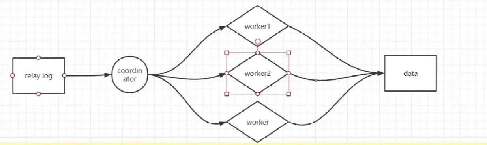
多线程slave（MTS）问题
为了提高执行效率，引入多线程并行。但是此刻会存在一些并发事务问题，称为multi-thread slave。为了解决这些问题，mysql5.6引入一些规则。
更新同一行的多个事务，必须要分发到同一个worker中执行。
同一个事务不能拆开，必须要放到同一个worker中执行。
mysql5.7的并行复制策略
同时处于prepare状态的事务，在备库执行是可以并行的。
处于perpare状态的事务，与处于commit状态的事务之间，在备库上执行也是可以并行的。
读写分离
主服务器处理写操作以及实时性要求较高的读操作，而从服务器处理读操作。 读写分离能提高性能的原因在于：
主从服务器负责各自的读和写，极大程度缓解了锁的争用，
从服务器可以使用 MyISAM，提升查询性能以及节约系统开销；
增加冗余，提高可用性。 读写分离常用代理方式来实现，代理服务器接收应用层传来的读写请求，然后决定转发到哪个服务器。
十、其他问题
如何设计一个mysql表
选取存储引擎
在表结构设计中，首先需要选择一个合适的存储引擎，如果需要事务操作，就选择InnoDB存储引擎，如果主要要求读性能高，可以使用MyISAM存储引擎。
表结构设计
使用范式设计，消除冗余
三大范式：
第一范式：属性（字段）的原子性约束，要求属性具有原子性，不可再分割。
第二范式：记录的唯一性约束，要求记录有唯一标识，每条记录需要有一个属性来作为实体的唯一标识。
第三范式：属性(字段)冗余性的约束，即任何字段不能由其他字段派生出来，在通俗点就是：主键没有直接关系的数据列必须消除(消除的办法就是再创建一个表来存放他们，当然外键除外)
反范式设计，适当冗余
满足范式的表一定是规范化的表，但不一定是最佳的设计。 很多情况下会为了提高数据库的运行效率，常常需要降低范式标 准：适当增加冗余，达到以空间换时间的目的。比如我们有一个表，产品名称，单价，库存量，总价值。这个表是不满足第三范式的，因为“总价值”可以由“单价”乘以“数量”得到，说明“金额”是冗余字段。但是，增加“总价值”这个冗余字段，可以提高查询统计的速度，这就是以空间换时间的作法。合理的冗余可以分散数据量大的表的并发压力，也可以加快特殊查询的速度，冗余字段可以有效减少数据库表的连接，提高效率。
主键
主键：根据第二范式，需要有一个字段去标识这条记录，主键无疑是最好的标识，需要满足唯一性、非空性，但是很多表也不一定需要主键，但是对于数据量大，查询频繁的数据库表，一定要有主键，主键可以增加效率、防止重复等优点。
主键的选择也比较重要，一般选择长度小的键，小的键的比较速度快，同时小的键可以使主键的B树结构的层次更少。
主键的选择还要注意组合主键的字段次序，对于组合主键来说，不同的字段次序的主键的性能差别可能会很大，一般应该选择重复率低、单独或者组合查询可能性大的字段放在前面。
选择数据类型
更小的通常更好，更小的数据类型通常更快， 因为它们占用更少的磁盘、 内存和CPU缓存， 并且处理时需要的CPU周期也更少。
简单就好 简单数据类型的操作通常需要更少的CPU周期。 例如， 整型比字符操作代价更低， 因为字符集和校对规则（排序规则 ）使字符比较比整型比较更复杂。
尽量避免NULL：如果查询中包含可为NULL 的列， 对MySQL来说更难优化， 因为可为NULL 的列使得索引、 索引统计和值比较都更复杂。 可为NULL的列会使用更多的存储空间， 在MySQL里也需要特殊处理。 当可为NULL的列被索引时， 每个索引记录需要一个额外的字节， 在MyISAM里甚至还可能导致固定大小的索引（例如只有一个整数列的索引）变成可变大小的索引。当然也有例外， 例如InnoDB 使用单独的位 (bit) 存储NULL值， 所以对于稀疏数据有很好的空间效率。
数据类型尽量用数字型，数字型的比较比字符型的快很多
合适的索引
索引是一个表优化的重要指标，在表优化中占有极其重要的成分。
添加注释
一条SQL语句执行的过程
mySQL主要分为server层和引擎层。server层主要包括连接器，分析器，优化器，执行器，同时还有一个日志模块。这个日志模块是所有执行引擎都可以共用的。
引擎层是插件式的，主要包括：MYISAM,InnoDB,等
查询语句的执行流程：权限校验（如果命中缓存）---》查询缓存---》分析器---》优化器---》权限校验---》执行器---》引擎
先检查该语句是否有权限，如果没有权限，直接返回错误信息，如果有权限，在 MySQL8.0 版本以前，会先查询缓存，以这条 sql 语句为 key 在内存中查询是否有结果，如果有直接缓存，如果没有，执行下一步。
通过分析器进行词法分析，提取 sql 语句的关键元素，比如提取上面这个语句是查询 select，提取需要查询的表名为 tb_student,需要查询所有的列，查询条件是这个表的 id='1'。然后判断这个 sql 语句是否有语法错误，比如关键词是否正确等等，如果检查没问题就执行下一步。
接下来就是优化器进行确定执行方案，上面的 sql 语句，可以有两种执行方案，那么优化器根据自己的优化算法进行选择执行效率最好的一个方案（优化器认为，有时候不一定最好）。那么确认了执行计划后就准备开始执行了。
xxxxxxxxxxa.先查询学生表中姓名为“张三”的学生，然后判断是否年龄是 18。b.先找出学生中年龄 18 岁的学生，然后再查询姓名为“张三”的学生。根据执行计划执行 SQL 查询语句，从存储引擎读取记录，返回给客户端；
更新语句执行流程如下：分析器----》权限校验----》执行器---》引擎---redo log(prepare 状态)---》binlog（归档日志）---》redo log(commit状态)
具体更新一条记录
UPDATE t_user SET name = 'xiaolin' WHERE id = 1;的流程如下:执行器负责具体执行，会调用存储引擎的接口，通过主键索引树搜索获取 id = 1 这一行记录：
如果 id=1 这一行所在的数据页本来就在 buffer pool 中，就直接返回给执行器更新；
如果记录不在 buffer pool，将数据页从磁盘读入到 buffer pool，返回记录给执行器。
执行器得到聚簇索引记录后，会看一下更新前的记录和更新后的记录是否一样：
如果一样的话就不进行后续更新流程；
如果不一样的话就把更新前的记录和更新后的记录都当作参数传给 InnoDB 层，让 InnoDB 真正的执行更新记录的操作；
开启事务， InnoDB 层更新记录前，首先要记录相应的 undo log，因为这是更新操作，需要把被更新的列的旧值记下来，也就是要生成一条 undo log，undo log 会写入 Buffer Pool 中的 Undo 页面，不过在内存修改该 Undo 页面后，需要记录对应的 redo log。
InnoDB 层开始更新记录，会先更新内存（同时标记为脏页），然后将记录写到 redo log 里面，这个时候更新就算完成了。为了减少磁盘I/O，不会立即将脏页写入磁盘，后续由后台线程选择一个合适的时机将脏页写入到磁盘。这就是 WAL 技术，MySQL 的写操作并不是立刻写到磁盘上，而是先写 redo 日志，然后在合适的时间再将修改的行数据写到磁盘上。
至此，一条记录更新完了。
在一条更新语句执行完成后，然后开始记录该语句对应的 binlog，此时记录的 binlog 会被保存到 binlog cache，并没有刷新到硬盘上的 binlog 文件，在事务提交时才会统一将该事务运行过程中的所有 binlog 刷新到硬盘。
事务提交（为了方便说明，这里不说组提交的过程，只说两阶段提交）：
prepare 阶段：将 redo log 对应的事务状态设置为 prepare，然后将 redo log 刷新到硬盘；
commit 阶段：将 binlog 刷新到磁盘，接着调用引擎的提交事务接口，将 redo log 状态设置为 commit（将事务设置为 commit 状态后，刷入到磁盘 redo log 文件）；
至此，一条更新语句执行完成。
MySql基本架构
连接器： 身份认证和权限相关(登录 MySQL 的时候)。
查询缓存: 执行查询语句的时候，会先查询缓存（MySQL 8.0 版本后移除，因为这个功能不太实用）。
分析器: 没有命中缓存的话，SQL 语句就会经过分析器，分析器说白了就是要先看你的 SQL 语句要干嘛，再检查你的 SQL 语句语法是否正确。
优化器： 按照 MySQL 认为最优的方案去执行。
执行器: 执行语句，然后从存储引擎返回数据。
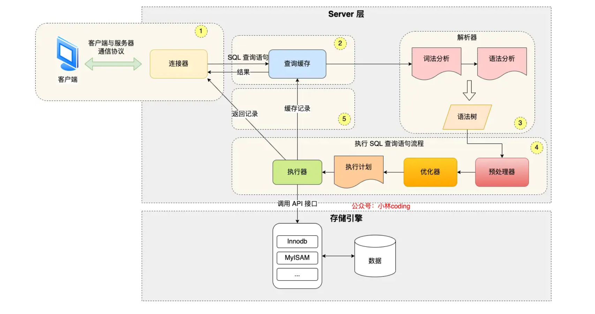
简单来说 MySQL 主要分为 Server 层和存储引擎层：
Server 层：主要包括连接器、查询缓存、分析器、优化器、执行器等，所有跨存储引擎的功能都在这一层实现，比如存储过程、触发器、视图，函数等，还有一个通用的日志模块 binglog 日志模块。
存储引擎： 主要负责数据的存储和读取，采用可以替换的插件式架构，支持 InnoDB、MyISAM、Memory 等多个存储引擎，其中 InnoDB 引擎有自有的日志模块 redolog 模块。现在最常用的存储引擎是 InnoDB，它从 MySQL 5.5.5 版本开始就被当做默认存储引擎了。
Mysql一行是怎么存储的
mysql怎么存储数据的？
一张数据库表的数据是保存在「 表名字.ibd 」的文件里的，这个文件也称为独占表空间文件。
表空间由段（segment）、区（extent）、页（page）、行（row）组成。
数据库表中的记录都是按行（row）进行存放的，每行记录根据不同的行格式，有不同的存储结构。
InnoDB 的数据是按「页」为单位来读写的，也就是说，当需要读一条记录的时候，并不是将这个行记录从磁盘读出来，而是以页为单位，将其整体读入内存。
在表中数据量大的时候，为某个索引分配空间的时候就不再按照页为单位分配了，而是按照区（extent）为单位分配。这样就使得链表中相邻的页的物理位置也相邻，就能使用顺序 I/O 了。
表空间是由各个段（segment）组成的，段是由多个区（extent）组成的。段一般分为数据段、索引段和回滚段等。
每一行都有哪些信息？
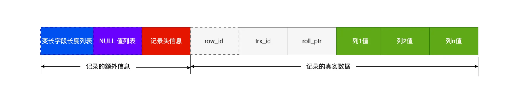
变长字段长度列表：存储变长字段的长度，是逆序存放的。使得位置靠前的记录的真实数据和数据对应的字段长度信息可以同时在一个 CPU Cache Line 中，这样就可以提高 CPU Cache 的命中率。
NULL 值列表：如果存在允许 NULL 值的列，则每个列对应一个二进制位（bit），二进制位按照列的顺序逆序排列。1： 表示该列为null, 0 : 表示该列不为Null。当数据表的字段都定义成 NOT NULL 的时候，这时候表里的行格式就不会有 NULL 值列表了。
记录头信息： 常见的有delete_mask（标记这条记录是否被删除），next_record：下一条记录的位置; record_type: 表示当前记录的类型，是普通记录还是最小记录还是最大记录。
row_id：如果我们建表的时候指定了主键或者唯一约束列，那么就没有 row_id 隐藏字段了。如果既没有指定主键，又没有唯一约束，那么 InnoDB 就会为记录添加 row_id 隐藏字段。row_id不是必需的，占用 6 个字节。
trx_id：事务id，表示这个数据是由哪个事务生成的。 trx_id是必需的，占用 6 个字节。
roll_pointer ： 这条记录上一个版本的指针。roll_pointer 是必需的，占用 7 个字节。
行溢出后，MySQL 是怎么处理的？
如果一个数据页存不了一条记录，InnoDB 存储引擎会自动将溢出的数据存放到「溢出页」中。
Compact 行格式针对行溢出的处理是这样的：当发生行溢出时，在记录的真实数据处只会保存该列的一部分数据，而把剩余的数据放在「溢出页」中，然后真实数据处用 20 字节存储指向溢出页的地址，从而可以找到剩余数据所在的页。
Compressed 和 Dynamic 这两种格式采用完全的行溢出方式，记录的真实数据处不会存储该列的一部分数据，只存储 20 个字节的指针来指向溢出页。而实际的数据都存储在溢出页中。
参考资料
https://www.kancloud.cn/kancloud/theory-of-mysql-index/41844